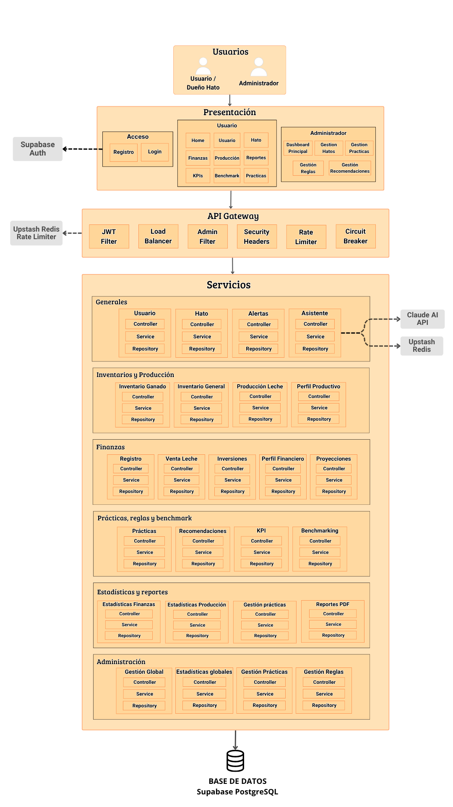

🏛️ Arquitectura — Documentación
Hathor está construido bajo una arquitectura moderna, desacoplada y escalable organizada en tres capas bien definidas: presentación, gateway y servicios. Cada capa tiene responsabilidades claras y se comunica con la siguiente a través de contratos explícitos, garantizando independencia, mantenibilidad y escalabilidad horizontal del sistema.
🗺️ Vista General del Sistema

👥 Capa de Presentación
La capa de presentación expone dos perfiles de usuario con interfaces diferenciadas.
El Usuario / Dueño de Hato accede a los módulos operativos del sistema: Home, gestión de usuarios y hatos, finanzas, producción, reportes, KPIs, benchmarking y prácticas productivas. El Administrador dispone de un dashboard principal y módulos de gestión transversal: hatos, prácticas, reglas y recomendaciones.
El acceso al sistema está gestionado mediante Supabase Auth, que centraliza los flujos de registro e inicio de sesión.
🌐 API Gateway
Toda solicitud originada desde la capa de presentación pasa obligatoriamente por el API Gateway antes de alcanzar cualquier servicio del backend. El gateway actúa como guardián, árbitro de tráfico y primera línea de defensa del sistema mediante un pipeline de filtros reactivos:
| Componente | Responsabilidad |
|---|---|
| JWT Filter | Validación estructural y preventiva de tokens |
| Load Balancer | Distribución de carga entre instancias backend |
| Admin Filter | Restricción de rutas administrativas |
| Security Headers | Endurecimiento HTTP en cada respuesta saliente |
| Rate Limiter | Control de tráfico apoyado en Upstash Redis |
| Circuit Breaker | Protección activa ante fallos en servicios backend |
💡 Nota de diseño: La validación criptográfica de tokens y la lógica de autorización por roles son responsabilidad exclusiva del backend. El gateway realiza únicamente una revisión estructural y preventiva para rechazar tráfico inválido de forma temprana.
⚙️ Capa de Servicios
El backend está organizado en seis grupos funcionales. Cada módulo sigue una estructura uniforme de tres capas: Controller → Service → Repository.
Generales
Núcleo operativo del sistema. Agrupa los módulos de Usuario, Hato, Alertas y Asistente. El módulo de Asistente se integra externamente con la Claude AI API para el procesamiento de lenguaje natural, y con Upstash Redis para la gestión de contexto conversacional.
Inventarios y Producción
Gestiona los activos físicos y el registro productivo del hato: Inventario Ganado, Inventario General, Producción Leche y Perfil Productivo.
Finanzas
Controla el ciclo financiero completo del hato a través de cinco módulos: Registro, Venta Leche, Inversiones, Perfil Financiero y Proyecciones.
Prácticas, Reglas y Benchmark
Motor analítico y de recomendación del sistema. Integra los módulos de Prácticas, Recomendaciones, KPI y Benchmarking, que trabajan en conjunto para evaluar el desempeño del hato y sugerir acciones de mejora.
Estadísticas y Reportes
Capa de análisis y salida documental. Comprende Estadísticas Finanzas, Estadísticas Producción, Gestión Prácticas y Reportes PDF.
Administración
Módulos de gestión transversal accesibles únicamente por el perfil administrador: Gestión Global, Estadísticas Globales, Gestión Prácticas y Gestión Reglas.
🗄️ Base de Datos
Todos los servicios del backend persisten en una base de datos relacional PostgreSQL gestionada a través de Supabase. El modelo de datos centraliza tanto información operativa generada por los usuarios como catálogos y referencias estáticas utilizadas por los motores de cálculo y recomendación.
💡 Más detalle: La estructura completa del modelo de datos, sus entidades, relaciones y parametrización inicial están documentadas en la sección Base de Datos.
🔗 Integraciones Externas
| Servicio | Uso dentro del sistema |
|---|---|
| Supabase Auth | Autenticación y gestión de sesiones de usuario |
| Supabase PostgreSQL | Persistencia relacional de todos los módulos |
| Upstash Redis | Rate limiting distribuido y contexto del asistente IA |
| Claude AI API | Motor de lenguaje natural del módulo Asistente |